정보처리산업기사 (2017-08-26 기출문제)
1과목: 데이터 베이스
1. 다음 그림의 이진 트리를 Preorder로 운행한 경우 C는 몇 번째로 탐색되는가?
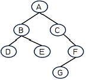
- 3번째
- 4번째
- 5번째
- 6번째
(정답률: 69%)

2. 시스템 카탈로그(System Catalog)라고도 하며, 스키마와 이들 속 에 포함된 사상들의 정보가 저장되어 있는 곳을 무엇이라 하는가?
- 데이터 디렉토리(Data Directory)
- 데이터 사전(Data Dictionary)
- 데이터 북(Data Book)
- 데이터 상점(Data Store)
(정답률: 81%)
3. 릴레이션 R의 모든 결정자가 후보키이면 릴레이션 R은 어떤 정규형에 속하는가?
- 제 1정규형
- 제 2정규형
- 제 3정규형
- 보이스코드(BCNF) 정규형
(정답률: 57%)
4. SQL의 조작문 유형으로 옳지 않은 것은?
- INSERT ~ FROM ~ SET ~
- SELECT ~ FROM ~ WHERE ~
- DELETE ~ FROM ~ WHERE ~
- UPDATE ~ SET ~ WHERE ~
(정답률: 76%)
5. 해싱에서 서로 다른 두 개 이상의 레코드가 같은 주소를 갖는 현상을 의미하는 것은?
- 오버플로(overflow)
- 재귀(recursion)
- 충돌(collision)
- 버킷(bucket)
(정답률: 81%)
6. 다음 자료의 구조 중 성격이 나머지 셋과 다른 하나는?
- 스택
- 큐
- 데크
- 트리
(정답률: 85%)
7. E-R 다이어그램에서 개체를 의미하는 기호는?
- 사각형
- 오각형
- 삼각형
- 타원
(정답률: 84%)
8. 하나의 릴레이션에 존재하는 후보키들 중 기본키를 제외한 나머지 후보키들을 의미하는 것은?
- 외래키
- 슈퍼키
- 대체키
- 기본키
(정답률: 68%)
9. 관계형 데이터베이스에서 튜플의 수를 의미하는 것은?
- attribute
- degree
- cardinality
- intergrity
(정답률: 78%)
10. SQL 명령 중 DML에 속하지 않는 것은?
- SELECT
- INSERT
- ALTER
- DELETE
(정답률: 81%)
11. 데이터의 접근권한, 보안 정책, 무결성 규칙에 관한 명세를 정의한 것은?
- 제어 스키마
- 외부 스키마
- 개념 스키마
- 내부 스키마
(정답률: 61%)
12. 데이터 모델의 종류 중 오너-멤버(owner-member) 관계를 갖는것은?
- 뷰 데이터 모델
- 네트워크 모델
- 계층 데이터 모델
- 관계 데이터 모델
(정답률: 64%)
13. 다음 자료의 구조 중 비선형 구조로만 짝지어진 것은?
- 데크, 트리
- 그래프, 트리
- 큐, 그래프
- 스택, 트리
(정답률: 84%)
14. 인덱스 순차 파일(Index Sequential File)의 인덱스 영역의 종류에 해당하지 않는 것은?
- Track Index Area
- Cyclinder Index Area
- Master Index Area
- Primary Index Area
(정답률: 76%)
15. 관계 대수 중 순수 관계 연산이 아닌 것은?
- join
- select
- project
- difference
(정답률: 69%)
16. 다음 그림에서 트리의 차수(Degree of a Tree)는?
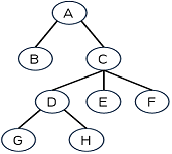
- 1
- 2
- 3
- 4
(정답률: 82%)
17. 학생 테이블에서 학번이 “1144077”인 학생의 학년을 “2”로 수정하기 위한 SQL 질의어는?
- UPDATE 학년=“2” FROM 학생 WHERE 학번=“1144077”;
- UPDATE 학생 SET 학년=“2” WHERE 학번=“1144077”;
- REPLACE FROM 학생 SET 학년=“2” WHERE 학번=“1144077”;
- REPLACE 학년=“2” SET 학생 WHERE 학번=“1144077”;
(정답률: 77%)
18. 뷰(View)의 삭제시 사용되는 SQL 명령은?
- DELETE
- DROP
- OUT
- CLEAR
(정답률: 84%)
19. 다음 자료를 버블 정렬을 이용하여 오름차순으로 정렬하고자 할 경우 경우 1회전 후의 결과는?
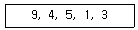
- 4, 5, 1, 3, 9
- 1, 3, 4, 5, 9
- 4, 1, 3, 5, 9
- 1, 3, 9, 4, 5
(정답률: 84%)
20. 다음 ( ) 안에 알맞은 용어는?
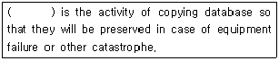
- Transaction
- Backup
- RDBMS
- DBA
(정답률: 79%)
2과목: 전자 계산기 구조
21. 오퍼랜드 필드가 메모리 내의 주소를 참조하여 그 주소로부터 유효번지를 계산하여 메모리에 접근하는 주소지정방식은?
- Relative Addressing Mode
- Indirect Addressing Mode
- Index Addressing Mode
- Immediate Addressing Mode
(정답률: 55%)
22. 디지털 컴퓨터에서 사용되는 마이크로 연산이 아닌 것은?
- 레지스터 전송 마이크로 연산
- 산술 마이크로 연산
- 논리 마이크로 연산
- 동기 마이크로 연산
(정답률: 54%)
23. Unpacked decimal 형식으로 (543)10을 표현한 것은?
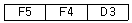
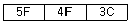
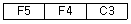
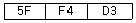
(정답률: 53%)
24. 4096 × 8 비트 조직을 가진 ROM은 몇 개의 어드레스 라인을 갖고 있는가?
- 10
- 12
- 14
- 16
(정답률: 62%)
25. 채널(Channel) 제어기에 관한 설명이 가장 옳지 않은 것은?
- 채널 제어기는 주컴퓨터와 별도인 입출력 전용 컴퓨터라 할수 있다.
- 채널 제어기는 중앙처리장치와 동시에 동작할 수 있다.
- 채널 제어기는 채널 프로그램을 수행한다.
- 채널 제어기는 하나의 명령(Instruction)에 의해 하나의 블록만을 입출력 되도록 한다.
(정답률: 56%)
26. 마이크로 오퍼레이션에 관한 설명 중 옳은 것은?
- 마이크로 오퍼레이션을 동기시키는 방법으로 동기 고정식과 동기 가변식이 있다.
- 동기 고정식은 CPU 시간의 효율적 이용은 가능하나 제어가 복잡하다.
- 동기 가변식은 CPU 시간의 낭비를 초래하지만 제어회로가 간단하다.
- 마이크로 사이클은 마이크로 오퍼레이션과 무관하다.
(정답률: 67%)
27. 다음 중 이항(Binary) 연산은 어떤 것인가?
- complement
- shift
- OR
- rotate
(정답률: 63%)
28. 읽기 전용의 보조기억장치는?
- SSD
- Floppy Disk
- RAM
- ROM
(정답률: 64%)
29. 어떤 인스트럭션의 수행 속도를 반으로 줄였다고 가정한다. 프로그램에서 사용한 인스트럭션들의 20%가 이 인스트럭션이라면 프로그램 전체의 수행속도는 약 얼마만큼 향상되는가?
- 0.99%
- 11.11%
- 47.22%
- 65.25%
(정답률: 66%)
30. 논리 함수식 F(A,B,C) = ∑(1, 3, 4, 6)를 간략화 하였을 때 결과식으로 옳은 것은?
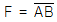
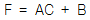
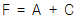
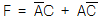
(정답률: 44%)
31. 명령어의 op-code(명령코드)는 어느 레지스터에서 이용하는가?
- flag register
- index register
- address register
- instruction register
(정답률: 51%)
32. 데이터를 수집하고 그것을 계산 처리용으로 변환하여 계산을 실행한 후 그 결과를 사용자에게 반환하는 데 걸리는 시간을 나타내는 개념으로 가장 옳은 것은?
- idle time
- process time
- turnaround time
- prefect time
(정답률: 69%)
33. 다음 보기 중 Unary 연산을 표시하는 것은?
- AND
- OR
- MOVE
- 모두 해당 없음
(정답률: 56%)
34. 기억장치로부터 명령어를 인출하여 해독하고, 해독된 명령어를 실행하기 위해 제어 신호를 발생시키는 각 단계의 세부 동작을 무엇이라 하는가?
- Fetch operation
- Control operation
- Macro operation
- Micro operation
(정답률: 54%)
35. 다음 중 보조기억장치의 데이터를 입출력할 경우 가장 효율성이 뛰어난 방법은?
- Direct Memory Access
- Interrupt I/O
- Programmed I/O
- Strobe
(정답률: 59%)
36. 다음 중 ALU의 주 기능은?
- OP 코드의 번역
- address 버스 제어
- 산술과 논리 연산의 실행
- 필요한 기계 사이클 수의 계산
(정답률: 71%)
37. 다음 중 보조기억장치로 사용될 수 없는 것은?
- 자기테이프(Magnetic Tape)
- 자기디스크(Magnetic disk)
- 플로피디스크(Floppy disk)
- 중앙처리장치(Central Processing Unit)
(정답률: 72%)
38. 광디스크(Optical disc)의 종류에 해당하지 않는 것은?
- SSD
- Blu-ray
- DVD
- CD
(정답률: 66%)
39. RS 플립플롭에서 정의되지 않는 상태를 보완한 것은?
- D 플립플롭
- JK 플립플롭
- RS latch
- T 플립플롭
(정답률: 73%)
40. 인터럽트 처리 시 현재의 명령어 실행을 끝낸 즉시 PC에 저장되어 있는 다음에 실행할 명령어의 주소를 저장하는 곳은?
- Queue
- Dequeue
- Stack
- Buffer
(정답률: 56%)
3과목: 시스템분석설계
41. 코드 설계 시 유의사항으로 가장 옳지 않은 것은?
- 공통성과 체계성이 있어야 한다.
- 대상 자료와 일대다(1:N) 대응이 되도록 설계해야 한다.
- 사용자가 취급하기 쉬워야 한다.
- 컴퓨터 처리에 적합해야 한다.
(정답률: 68%)
42. 다음 중 시스템의 설계를 위한 목표와 목적에 가장 부합하는 것은?
- 사용자가 사용하기 쉽게 설계한다.
- 시스템을 구성하는 영역이나 업무를 독립적으로 유지한다.
- 전체적으로 균형 잡힌 시스템을 구축한다.
- 특정 부분을 특성화한다.
(정답률: 46%)
43. 자료 흐름도(DFD)에 대한 설명으로 가장 옳지 않은 것은?
- 구조적 분석용 문서화 도구
- 도형 중심의 표현
- 상향식 분할의 표현
- 자료 흐름 중심의 표현
(정답률: 65%)
44. 파일 설계 순서로 옳은 것은?
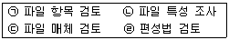
- ㉠ → ㉡ → ㉢ → ㉣
- ㉡ → ㉢ → ㉠ → ㉣
- ㉢ → ㉠ → ㉣ → ㉡
- ㉣ → ㉢ → ㉡ → ㉠
(정답률: 60%)
45. 소프트웨어 비용 산출 시 고려해야 할 요소로 가장 거리가 먼 것은?
- 제품의 복잡도
- 제품의 신뢰도
- 프로그래머의 자질
- 운용비
(정답률: 32%)
46. 색인 순차 파일(Indexed Sequential File)에서 색인 영역(index area)의 종류를 가장 옳게 나열한 것은?
- Cylinder Index area, Track Index area, Data Index area
- Master Index area, Cylinder Index area, Data Index area
- Master Index area, Cylinder Index area, Track Index area
- Track Index area, Master Index area, Data Index area
(정답률: 69%)
47. 시스템 개발 과정을 7단계로 분류할 때 단계에 따른 순서를 가장 옳게 나열한 것은?
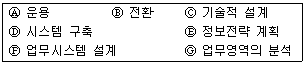
- E → G → F → A → B → C → D
- E → G → F → C → D → B → A
- E → G → F → B → A → C → D
- G → F → E → B → A → C → D
(정답률: 71%)
48. 파일을 수행 내용에 따라 분류할 때 프로그램 실행 중 일시적으로 발생하는 자료를 처리하기 위한 임시 파일에 해당하는 것은?
- 데이터 파일
- 자기 테이프 파일
- 작업 파일
- 프로그램 파일
(정답률: 48%)
49. 절차적 응집도에 대한 설명으로 가장 옳지 않은 것은?
- 처리 기능에 의하기보다는 시행 순서에 따라 연결된다.
- 모듈 내부에 처리 기능의 부분 요소를 가진다.
- 전달 데이터와 반환 데이터 간의 상호 연관 관계를 가진다.
- 여러 기능은 순서대로 실행된다.
(정답률: 38%)
50. 2개의 파일에서 레코드의 결합키를 비교하여 키 순서대로 한 개의 파일로 만드는 작업은?
- 갱신(update)
- 대조(contrast)
- 병합(merge)
- 정렬(sort)
(정답률: 64%)
51. 시스템의 특성 중 다음 설명에 해당하는 것은?
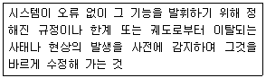
- 목적성
- 자동성
- 종합성
- 제어성
(정답률: 75%)
52. 정보 시스템의 5대 기본 구성요소의 설명으로 가장 옳지 않은 것은?
- 유지보수 기능은 시스템의 전반적인 기능들을 유지보수 하는 기능이다.
- 입력 기능은 처리 방법, 제어 조건, 처리할 데이터를 시스템에 입력하는 기능이다.
- 제어 기능은 각 과정의 기능이 올바르게 수행되는지를 통제하거나 관리하는 기능이다.
- 처리 기능은 결과를 산출하기 위해 입력 자료를 조건에 맞게 처리하는 기능이다.
(정답률: 39%)
53. 코드의 기능에 해당하지 않는 것은?
- 분류기능
- 배열기능
- 식별기능
- 종합기능
(정답률: 65%)
54. 시스템의 기본 요소 중 처리결과를 평가하여 불충분한 경우 목적 달성을 위해 반복 처리하는 요소는?
- feedback
- input
- output
- process
(정답률: 75%)
55. 입출력 설계 시 사용자 인터페이스 설계의 원리가 아닌 것은?
- 관리자 중심의 상호 작용이 되도록 설계
- 일관성 유지
- 작업 수행의 역행 기능을 제공
- 종결 표시를 제공
(정답률: 60%)
56. 다음 설명에 가장 부합하는 코드는?
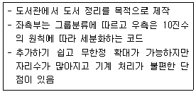
- 그룹 분류식 코드(Group classification code)
- 십진코드(Decimal code)
- 구분코드(Block code)
- 합성코드(Combined code)
(정답률: 62%)
57. 출력 내용에 대한 설계 사항에 해당되지 않은 것은?
- 출력 매체와 장치를 결정한다.
- 출력할 항목을 결정한다.
- 출력 항목의 배열 순서, 크기, 자리수를 결정한다.
- 출력 항목을 숫자, 영문자, 한글, 한자 중 어느 것으로 할 것인지를 결정한다.
(정답률: 47%)
58. 마스터 파일의 내용을 변동 파일에 의해 추가, 삭제, 수정 등의 작업을 하여 새로운 파일을 만드는 처리 패턴은?
- extract
- matching
- merge
- update
(정답률: 74%)
59. 객체지향시스템 분석에서 사건들을 시나리오로 작성하여 각 시나리오마다 사건추적도를 그리고 사건 흐름 다이어그램을 작성하는 단계는 어떤 단계인가?
- 객체 모형화
- 동적 모형화
- 기능 모형화
- 사양서 작성
(정답률: 60%)
60. 우리나라 주민등록번호의 코드 체크 방식은?
- 발란스 체크(balance check)
- 에코 체크(echo check)
- 패리티 체크(parity check)
- 체크 디지트 체크(check digit check)
(정답률: 68%)
4과목: 운영체제
61. 3페이지가 들어갈 수 있는 기억장치에서 다음과 같은 순서로 페이지가 참조될 때 FIFO 기법을 사용하면 최종적으로 기억공간에 남는 페이지들로 옳은 것은?(단, 현재 기억공간은 모두 비어있다고 가정한다.)
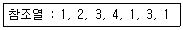
- 1, 2, 3
- 1, 2, 4
- 2, 3, 4
- 3, 1, 4
(정답률: 61%)
62. 교착 상태의 예방을 위하여 각 자원 유형에 일련의 순서번호를 부여하는 것은 다음 중 어떤 교착 상태 발생 조건을 제거하기 위한 것인가?
- 상호 배제 조건
- 점유와 대기 조건
- 비선점 조건
- 환형 대기 조건
(정답률: 33%)
63. 파일 디스크립터(descriptor)가 가지고 있는 정보가 아닌 것은?
- 파일의 구조
- 접근 제어 정보
- 보조기억장치상의 파일의 위치
- 파일의 백업 방법
(정답률: 64%)
64. 자료구조의 영역(data area)을 편성하는 방법에서 File 내의 각 item을 논리적인 순서에 따라 물리적으로 연속된 위치로 저장하는 방법은?
- Low Order 편성
- Sequential 편성
- High Order 편성
- Random 편성
(정답률: 67%)
65. 보안 유지 기법 중 하드웨어나 운영체제에 내장된 기능으로 프로그램의 신뢰성 있는 운영과 데이터의 무결성을 보장하기 위한 기능과 관련된 것은?
- 사용자 인터페이스 보안
- 내부 보안
- 외부 보안
- 시설 보안
(정답률: 67%)
66. 버퍼링에 대한 설명으로 가장 옳지 않은 것은?
- CPU의 효율적인 시간 관리를 지향하기 위해 도입되었다.
- 주기억장치와 CPU간 또는 주기억장치와 입출력 장치간의 데이터 이동에 있어서의 시간 관리의 효율화를 도모한다.
- 용량이 큰 자기디스크를 물리적인 중간 저장장치로 사용한다.
- 입출력 장치의 느린 속도를 보완해 주는 방법으로 버퍼링이라는 개념이 출현하였다.
(정답률: 59%)
67. 다음 중 임계구역(critical section) 문제를 해결하기 위한 조건이 아닌 것은?
- 상호 배제(mutual exclusion)
- 진행(process)
- 비선점(non-preemption)
- 한계 대기(bounded waiting)
(정답률: 28%)
68. 사용자 프로그램이 20K 워드이고 평균 지연시간이 10 ms이며, 전송시간이 초당 200,000 워드인 고정헤드 드럼이 있다고 가정하자. 이 때 기억장소에서 또는 기억장소로 20K 프로그램이 전송되는 시간과 교환시간이 올바르게 짝지어진 것은?(단, K=kilo이다.)
- 전송시간 100 ms, 교환시간 200 ms
- 전송시간 110 ms, 교환시간 220 ms
- 전송시간 120 ms, 교환시간 240 ms
- 전송시간 130 ms, 교환시간 260 ms
(정답률: 45%)
69. 사용자가 로그인할 때 사용자 인증을 위해 신원을 확인하는 방법으로 가장 옳지 않은 것은?
- Enter 키 누름
- 지문인식장치 사용
- 패스워드 입력
- 보안카드 사용
(정답률: 78%)
70. 페이지 교체 알고리즘 중 근래에 쓰이지 않은 페이지는 가까운 미래에도 쓰이지 않을 가능성이 많기 때문에 이러한 페이지를 호출되는 페이지와 대체시키는 기법은?
- COPY
- LRU
- FIFO
- SJF
(정답률: 71%)
71. 수행 중인 프로그램 0으로 나누는 연산이나, 허용되지 않은 명령어의 수행, 스택의 오버플로우(overflow) 등과 같은 잘못이 있을 때 발생하는 인터럽트는 무엇인가?
- 기계 검사(Machine Check) 인터럽트
- SVC(Supervisor Call) 인터럽트
- 프로그램 검사(Program Check) 인터럽트
- 재시작(Restart) 인터럽트
(정답률: 57%)
72. 라운드로빈(Round-Robin) 방식으로 스케줄링할 경우, 입력된 작업이 다음과 같고 각 작업의 CPU 할당 시간이 4시간일 때, 모든 작업을 완료하기 위한 CPU의 사용 순서가 옳게 나열된 것은?
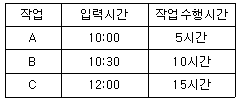
- A B C A B C B C C
- A A A B B B C C C
- A B C A B C A C A
- A C C C C C B A A
(정답률: 62%)
73. FCFS(First Come First Served) 스케줄링의 특성으로 거리가 먼 것은?
- 더 높은 우선순위의 요청이 도착하더라도 요청의 순서가 바뀌지 않는다.
- 대기 큐를 재배열하지 않고 일단 요청이 도착하면 실행 예정 순서가 도착순으로 고정된다.
- 먼저 도착한 요청이 우선적으로 서비스를 받기 때문에 근본적으로 동등한 서비스가 보장되고 프로그래밍하기도 쉽다.
- 실린더의 가장 안쪽과 바깥쪽에서 디스크 요청의 기아(starvation) 현상이 발생할 수 있다.
(정답률: 57%)
74. 디스크의 서비스 요청 대기 큐에 도착한 요청이 다음과 같을때 SSTF 스캐줄링 기법 사용 시 75번 트랙은 몇 번째로 서 비스를 받는가? (단, 현재 헤드위치는 100번 트랙으로 가정한다.)
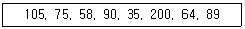
- 두 번째
- 세 번째
- 네 번째
- 다섯 번째
(정답률: 60%)
75. 다음은 무엇에 관한 정의인가?
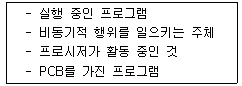
- PROCESS
- WORKING SET
- MONITOR
- SEMAPHORE
(정답률: 73%)
76. 분산 운영체제 시스템의 구조 중 성형구조에 대한 설명으로 가장 옳지 않은 것은?
- 자체가 단순하고 제어가 집중되어 모든 작동이 중앙컴퓨터에 의해 감시되기 때문에 하나의 제어기로 조절이 가능하다.
- 집중제어로 보수와 관리가 용이하다.
- 중앙 컴퓨터 고장 시 전체 네트워크에는 영향을 주지 않는다.
- 중앙 노드를 제외한 노드의 고장은 다른 노드에 영향을 주지 않는다.
(정답률: 69%)
77. 로더의 기능에 해당되지 않는 것은?
- allocation
- linking
- relocation
- compile
(정답률: 57%)
78. HRN 스케줄링 기법을 적용할 경우 우선순위가 가장 낮은 것은?
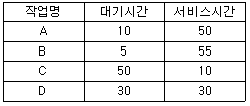
- A
- B
- C
- D
(정답률: 58%)
79. UNIX의 시스템 호출 명령어 중에서 프로세스를 복제하기 위해 사용되는 명령어는?
- getpid
- getppid
- pipe
- fork
(정답률: 54%)
80. 스케줄링, 기억장치관리, 파일관리, 입출력 관리 등의 기능을 제공하는 유닉스 시스템의 핵심 부분은?
- Shell
- Kernel
- IPC
- Fillter
(정답률: 70%)
5과목: 정보통신개론
81. 변조속도가 1600[baud]이고, 쿼드비트를 사용하여 전송할 경우 전송속도[bps]는?
- 2400
- 3200
- 4800
- 6400
(정답률: 62%)
82. ATM 셀의 헤더 길이는 몇[byte]인가?
- 2
- 5
- 8
- 10
(정답률: 67%)
83. 200.10.10.100/26의 IP 주소를 가진 호스트와 같은 네트워크에 속하는 IP 주소는?
- 200.10.10.1
- 200.10.10.66
- 200.10.10.130
- 200.10.10.200
(정답률: 46%)
84. HDLC프레임에서 링크의 설정, 해제, 오류 회복을 위해 주로 사용되는 프레임은?
- Flag Frame
- Unnumbered Frame
- Information Frame
- Synchronize Frame
(정답률: 40%)
85. 한 블록 내 각 행의 1의 수를 10진수로 계수한 다음 8421 BCD코드로 나타내고 아래 2자리의 결과를 체크 비트로 부가하는 착오 검출 방식은?
- 크로스 체크 방식
- 군계수 체크 방식
- SQD 방식
- 정마크 방식
(정답률: 50%)
86. LAN의 네트워크 형태(topology)에 따른 분류가 아닌 것은?
- BUS형
- Star형
- Packet형
- Ring형
(정답률: 74%)
87. 통신 프로토콜을 구성하는 기본 요소가 아닌 것은?
- Syntax
- Semantic
- Timing
- Speed
(정답률: 64%)
88. 다음 중 MAN에서 DQDB에 관한 IEEE 표준은?
- IEEE 801.1
- IEEE 902.3
- IEEE 802.6
- IEEE 832.8
(정답률: 56%)
89. 비 패킷형 단말기에서 조립·분해 기능을 제공해 주는 일종의 어댑터는?
- APM
- PVC
- PAD
- PCR
(정답률: 52%)
90. PCM 방식에서 아날로그 신호를 디지털 신호로 변환하는 과정을 순서대로 나열한 것은?
- 표본화 – 부호화 – 양자화 - 복호화
- 표본화 – 양자화 – 부호화 - 복호화
- 부호화 – 표본화 – 양자화 - 복호화
- 표본화 – 복보화 – 양자화 - 부호화
(정답률: 74%)
91. TCP는 OSI 7계층 중 어느 계층에 해당하는가?
- 응용 계층
- 전송 계층
- 세션 계층
- 물리 계층
(정답률: 66%)
92. 반송파로 사용하는 정현파의 위상에 정보를 실어 보내는 변조방식은?
- ASK
- DM
- PSK
- ADPCM
(정답률: 61%)
93. 서로 다른 기기들 간의 데이터 교환을 원활하게 수행할 수 있도록 표준화시켜 놓은 통신 규약을 무엇이라 하는가?
- 클라이언트
- 터미널
- 링크
- 프로토콜
(정답률: 73%)
94. 패킷교환방식에 대한 설명으로 틀린 것은?
- 교환기에서 패킷을 일시 저장 후 전송하는 축적교환 기술이다.
- 패킷처리 방식에 따라 데이터그램과 가상회선 방식이 있다.
- 패킷 교환망에서 DTE와 DCE 간 인터페이스를 위한 프로토콜 X.25가 있다.
- 고정된 대역폭으로 데이터를 전송한다.
(정답률: 58%)
95. IP망을 기반으로 음성통화를 구현하는 기술은?
- VoIP
- DMB
- WMF
- JPEG
(정답률: 73%)
96. 다중화(Multiplexing) 방식에 해당하지 않는 것은?
- FDM
- TDM
- WDM
- QDM
(정답률: 45%)
97. OSI 7계층 중 중점 호스트 사이의 데이터 전송을 다루는 계층으로 종점 간의 연결 관리, 오류제어와 흐름제어 등을 수행하는 계층은?
- 응용 계층
- 전송 계층
- 프레젠테이션 계층
- 물리 계층
(정답률: 59%)
98. PCM 방식에서 음성신호의 표본화 주파수가 8[kHz]인 경우 표본화 주기[μs]는?
- 125
- 250
- 500
- 1000
(정답률: 56%)
99. 전송선로 조건 중 선로의 감쇠량이 최소로 되는 경우는? (단, R : 선로의 저항, L : 선로의 인덕턴스, C : 선로의 정전용량, G : 선로의 누설컨덕턴스이다.)
- RL = GC
- LC = GR
- LG = RC
- LG = GC
(정답률: 50%)
100. ARQ(Automatic Repeat reQuest) 방식에 해당하지 않는 것은?
- Stop and Wait ARQ
- Adaptive ARQ
- Receive Ready ARQ
- Go back N ARQ
(정답률: 55%)